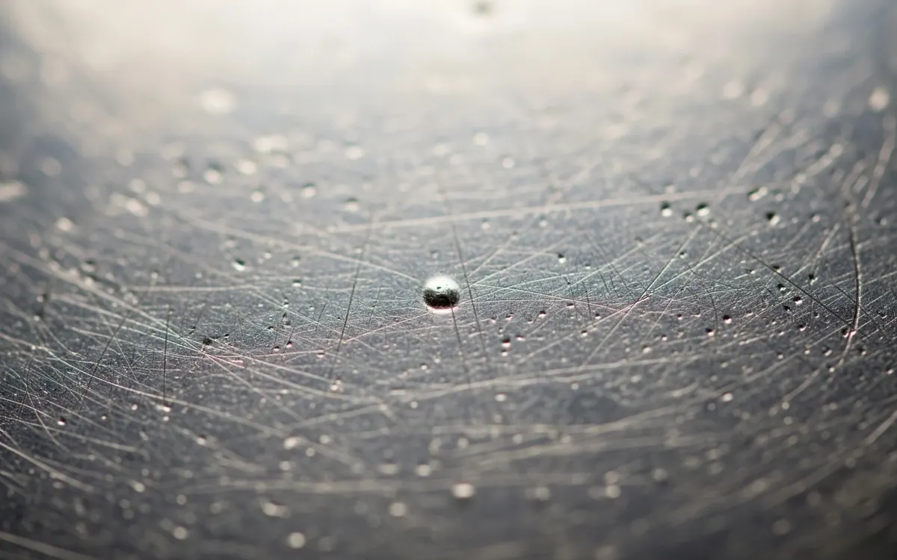
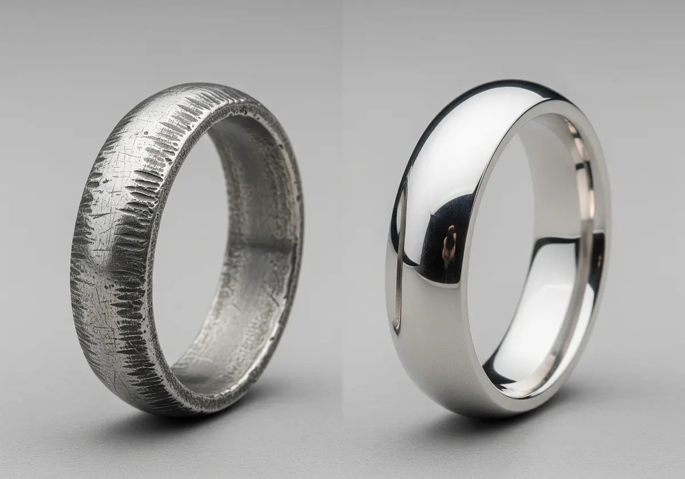

Si tienes un taller de joyería y quieres trabajar con plata recuperada, estas son las tres preguntas que hay que resolver antes:
- De dónde sale la plata en las cantidades pequeñas que usa un taller.
- Cómo se demuestra su origen.
- Cómo se cuenta sin que suene a etiqueta verde.
Esta guía las resuelve en tres fases: diagnosticar, diseñar y difundir.
1. Diagnosticar: entender tu taller y lo que tiene alrededor
Antes de decidir nada, mira cómo trabajas hoy y qué recursos tienes cerca.
Qué revisar
- El material: quién puede suministrarte plata recuperada en lotes pequeños y con un documento que diga de dónde viene. Por ejemplo, un afinador o un gestor de residuos electrónicos que trabaje con particulares y talleres.
- Los permisos: qué puedes hacer por tu cuenta y qué tiene que quedar en manos de un gestor autorizado. Manipular residuos electrónicos no es lo mismo que comprar plata ya recuperada.
- El coste: cuánto cuesta el gramo de plata recuperada con su documentación, frente a la plata que compras hoy.
- El cliente: quién te compra hoy, dónde y por qué. Y si a ese cliente le importa el origen del metal o tienes que buscar otro.
- La comunicación: qué cuentas ya en tu perfil, en tu web y en las ferias, y qué falta para que alguien entienda la colección en pocos segundos.
Qué deberías tener al acabar esta fase
Una lista corta con lo que ya funciona, lo que falta y tres prioridades ordenadas. Si la plata recuperada no te sale a cuenta, mejor saberlo aquí que con la colección ya hecha.

2. Diseñar: montar el sistema antes de lanzar la colección
- El suministro: elige uno o dos proveedores de plata recuperada y acuerda qué documento acompaña cada lote.
- La trazabilidad en tres capas: un código grabado en la pieza, una ficha de lote que la acompaña (origen, fecha, proveedor y certificado de pureza) y, si tiene sentido, un código QR con la información ampliada.
- La colección: piezas que sean bonitas por sí mismas. El origen del metal suma, pero no puede ser la única razón para comprar.
- El precio: calcúlalo con material, horas, gastos y margen, incluido lo que cuesta documentar cada lote.
- Lo que aún no consigues: si alguna parte de la pieza no puede ser de metal recuperado (los cierres, por ejemplo), dilo. Contarlo da más confianza que esconderlo.

3. Difundir: contarlo con pruebas y sin exagerar
- La historia en tres tiempos: de dónde viene la plata, cómo se transforma en tu taller y qué pieza sale al final.
- Fotos y vídeos del proceso: el lote que llega, el trabajo en el banco y la pieza terminada con su ficha.
- La ficha a la vista: en la tienda, en la feria y en la web, para que cualquiera pueda comprobar el origen.
- Mensajes que se pueden demostrar: nada de «100 % sostenible» si no se puede probar. Solo lo que dice la ficha.
- Plantillas y calendario: para que puedas contarlo de forma constante sin pasarte el día en redes.
Qué habría que medir
Estos son los datos que conviene apuntar desde el primer lote para saber si la colección funciona.
- Plata recuperada con documento de origen: gramos por lote y en total.
- Piezas con ficha de lote completa: sobre el total de piezas de la colección.
- Coste por gramo: plata recuperada frente a la plata que usas habitualmente.
- Horas de taller por pieza: incluido el tiempo de documentar cada lote.
- Margen por pieza: comparado con las piezas de tu colección habitual.
- Piezas vendidas y canal: tienda, ferias, encargos o venta por internet.
- Preguntas sobre el origen: cuántos clientes preguntan por la ficha o el material.
- Devoluciones y reclamaciones: sobre todo las que tengan que ver con el origen o la calidad.
¿Tienes un proyecto parecido?
Trabajamos así con empresas y talleres que transforman materiales
Si quieres usar materiales recuperados y poder demostrarlo, empezamos por el diagnóstico.
Ver cómo trabajamos →